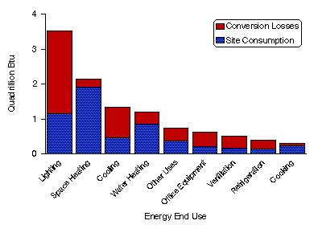

Home > Commercial Buildings Home > Energy End-Use Intensities > Overview
|
|
|
Home > Commercial Buildings Home > Energy End-Use Intensities > Overview |
1992 Energy End-Use Intensities OverviewEnergy Consumption by End Use, 1992
End-Use Estimation MethodologyThis note briefly describes the FEDS load estimation methodology, the statistical adjustment procedure, and the remaining steps necessary to produce the final end-use estimates. More details are contained in the 1989 CBECS end-use methodology report (Belzer et al. 1993).
The Facility Energy Decision Screening Engineering EstimatesThe FEDS software was developed for the Department of Energy's Federal Energy Management Program (FEMP) and the U.S. Army Construction Engineering Research Laboratory as a tool for screening groups of buildings on federal facilities (such as Army bases) for energy efficiency retrofits (Dirks and Wrench 1993). The engineering modules, which estimate the energy load to be subjected to retrofit optimization, are one in a series of well-known building energy simulations, which include DOE-2 and ASEAM. The FEDS uses high-level installation information (number, age, size, and types of buildings and energy systems), an internal data base of typical energy-system configurations and performance data, and sophisticated energy simulation and optimization models to estimate the net present value of potential energy retrofits in federal installations. The FEDS engineering models are designed to produce estimates for five end uses: space heating, cooling, ventilation, lighting, and water heating. Two other end uses, cooking and refrigeration, are also calculated internally by the model, although they are not part of the normal FEDS output. These seven end uses, plus an "other" end use, represent the FEDS accounting for total building end use. Estimates for office equipment energy use were not provided by the FEDS model. Estimates for the first five end uses are based on detailed building engineering simulations. Estimates for the latter two are more sketchy and rely on parameters developed in the Regional End-Use Monitoring Program (REMP, formerly known as the End-Use Load and Consumer Assessment Program (ELCAP)) study (Taylor and Pratt 1989). REMP was a large end-use monitoring project sponsored by the Bonneville Power Administration. As designed to be used in facilities, only a general description of a building need be input for the building energy loads to be estimated interactively, relying on an extensive series of internal default values. Some of these defaults were based on data from prior CBECS but many were based on REMP study. For use with the current CBECS, the FEDS interface was changed from interactive to batch, with the CBECS survey data supplying as many values as possible. Besides values relating to the building characteristics, the engineering estimates also required hourly weather profiles. For each calendar month, the average temperature during each hour of the day was calculated and input to the model.
Statistically Adjusted Engineering Estimates
The coefficients adjust the FEDS engineering estimates upward or downward to match the reported energy use. The eûibf are referred to as SAE estimates. If each estimated value of afu is equal to one, the EUIs are the same as those calculated in the engineering model. A value other than one can reflect a variety of factors. The FEDS model assumed values for a number of engineering variables on the basis of a typical or average building. If the characteristics within the sample buildings differ on average from the assumed values, then the actual EUIs will diverge from the engineering EUIs. The basic SAE equation stated above assumes that there is a constant bias in the engineering estimates. However, the assumption of constant bias may be inappropriate. The bias may vary along a number of dimensions. Building type, building age, occupant density, and the presence of energy-intensive activities within the building were some of the variables examined to explore the patterns of bias. A nonlinear SAE equation was developed to incorporate these items. The nonlinear framework allowed greater flexibility in the way that variables such as building age and employment density could interact with the engineering estimates of end-use consumption. The SAE equations were estimated separately for (1) electricity end-uses and natural gas space heating and for (2) natural gas end-uses other than space heating. Due to the limited number of cases, fuel oil and district heat SAE estimates were produced by using parameters estimated for natural gas.
The Final End-Use EstimatesThe office equipment estimate was also made after the SAE by using REMP estimates (Pratt et al. 1990). The REMP estimates were used to estimate the office equipment share of the "other" end use energy consumption. Included in office equipment were large computer equipment (if the CBECS data indicated the presence of a computer area with a separate air-conditioning system), personal computer equipment, and general office equipment (typewriters, copiers, cash registers, etc.).
ReferencesDirks, J. A., and Wrench, L. R., 1993, "Federal Energy Decision Screening (FEDS) System Software," PNL-SA-22780 (Pacific Northwest Laboratory, Richland, WA). Pratt, R. G.. Williamson, M. A., Richman, E. E., and Miller, N. E., 1990, Commercial Electric Loads: End-Use Load and Consumer Assessment Program (ELCAP), (Pacific Northwest Laboratory, Richland, WA). Taylor, Z. T. and Pratt, R. G., 1989, Description of Electric Energy Use in Commercial Buildings in the Pacific Northwest, DOE/BP-13795-22 (Pacific Northwest Laboratory, Richland, WA).
URL: http://www.eia.gov/consumption/commercial/data/archive/cbecs/cbecs2q.html  |